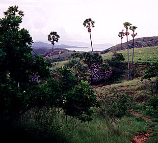
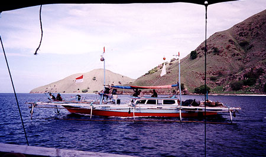
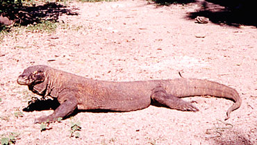

Sent: 12 Jan 2000 11:45 GMT
web version,
|
 |
| Prior Trav-E-Log: Flores | The Flores Sea is ... coral, outriggers, bats and Komodo dragons ... |
(Note:) This is the 18th in a series of Trav-E-Logs sent while traveling in S.E.Asia between Oct 16, 1999 and Jan 22, 2000.Hi folks,
Sent three updates yesterday, and here come another three at you. All six should be read in the proper order if you really want to understand the situation. The order for those sent today are this one, "boating", followed by "Sumbawa", and finally "Lombok". Hope you enjoy reading them as much as I do writing them.
=====================
Our plans are to take a 4-day, 3-night boat trip to Lombok, thus avoiding an unpleasant bus trip across the island of Sumbawa. As expected, the travel agent tells us we need 6 people to make the quota for the trip. We search for and find Colin and Hilda, the couple from Hong Kong seen on top of Kelimutu. Two other tour agencies are checked out, but they all turn out to be run by the same agent. The agency arranges for the boat, we send representatives to check it out, and it looks fine. When we ask to meet the captain, to check his language skills, we're told "can't see him until tomorrow morning". Then back to the office to finalize plans. "The owner insists on 8 passengers," we are told. Price is re-negotiated 30% higher, because we are short 2 people. Itinerary, food, drink, ice, and fishing/snorkeling equipment is all agreed upon. The contract is drawn up, and we agree to pay 50% immediately, and balance at the dock tomorrow morning. We go to hand the agent the money, and he says to wait a minute, as he disappears for over an hour. It has now been more than 6 hours of negotiations for this trip, and it will soon be dark.
Finally the agent returns after 5 PM, and simply says sorry, no captain. Although Flores is predominately Catholic, most watermen are Muslim, and they want to be home for the end of Ramadan. I'm ready to give up on the trip, but the others find another agent, with captain, crew, and boat for a shorter, 3-day, 2-night boat trip to Rinca, Komodo, Fox island, Red beach, and several other snorkeling spots, ending at Sape on the Island of Sumbawa. This is 250 rough KM short of our goal, but gets us to several very interesting and scenic spots. We buy bus transportation from the port of Sape all the way to Lombok, or Bali, from the same agent, as he warns us it may be difficult finding transportation because of Ramadan. (I've heard the stories of buying tickets that were not honored, and having to return to the same agent to get a refund, but he instructs me how to get a refund in the unlikely event this bus has to be canceled.) It's too late to meet the captain, see the boat, or negotiate equipment, but are told the food will include chicken and fish, and will be Indonesian style. That's fine with us.
Chris makes a beer run, while I buy pineapples, bananas, cokes, wafers, and cookies for the trip, as most meals here don't fill me up. Colin and Hilda also bring bananas, a pineapple, and lots of other sweets.
Using a boat is a wonderful way to see the sights, relax, snorkel, and travel to your next destination, especially after spending hundreds of hours on buses. The promised chicken is never served, and only part of the fish we caught, but each meal is delicious, and it doesn't bother me that possibly the crew is eating better than us. After all, the trip is happening, when most Muslims want to celebrate the holidays with their families. I note that two of the crew observe Ramadan fasting rules, while the other two are discrete when they eat. Slept the first night on deck with the crew and the next night up on the roof with the other tourists. No rain, but very heavy dew made for uncomfortably humid sleeping, while anchored each night in a sheltered cove.
We visit the national park on the islands of Komodo and Rinca, where we see the famed "Komodo dragons". These monitor lizards start twitching their tail and hissing when irritated. After having seen and read so much about them, I'm not very impressed. One good thing, however, is that the disgusting practice of feeding them a whole goat as a "tourist attraction" has ceased.
The island also home to monkeys, birds, boar, and different vegetation than that found anywhere else I have been in Indonesia. On neighboring Fox Island, many thousands of fruit bats are seen departing the mangrove trees the first evening, and returning the next morning. At 7+ degrees south latitude, I spend a good chunk of time examining the moonless night sky from the roof of the boat. Even the familiar constellations look strange from this perspective. I make a note to get a book on the southern night sky before my next trip south of the equator.
Chris catches the biggest fish of the trip by trolling a hand line. My guess is 5 pounds, but others guess more. The snorkeling spots are nice when you get out of the bomb damaged areas, but the water is not as clear as the Togians. I can only stay in the water 30 to 50 minutes at a time, as my fingers go numb in the 80 to 82 F degree water. Colin, Hilda, and I only venture 1000' or so from the boat, as the three of us don't have swim fins, and the current is rather strong in area. I'm happy with just my mask, as I don't want to carry fins and snorkel all over Southeast Asia. Besides, "supplied" equipment is generally worthless.
On the third day, we pull into the port of Sape at 2 PM, right on schedule. The crew has been great, the craft reliable, and the weather terrific. Other observations along the way were flying fish, dolphins, a smoking volcano, sailing ships, and lots of fishermen in outrigger boats. We tell other backpackers, waiting for the ferry to Labuan Bajo, they might consider hiring our boat, as we had a grand trip, and the crew is in a hurry to get home for Ramadan.
Bill